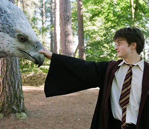

본문콘텐츠영역
-
Harry Potter and the Philosopher's Stone
Harry Potter, the child who lost his parents to the evil wizard Voldemort long ago, but he downed and survived, does not know that he is a wizard and grows up in the Dursley family, a relative. While he was having a difficult day with harsh criticism from his relatives, at the age of 11, Harry received a notice of admission to Hogwarts, a magical school. Uncle Vernon Dursley prevents Harry from receiving the letter, but Harry finds out that he is a wizard after many twists and turns. And with the guidance of Rubius Hagrid, the Hogwarts forest keeper, who came to meet him, he prepares to enter Hogwarts and finally goes to school...
-
Harry Potter and the Chamber of Secrets
In 1992, shortly after the end of his first year at Hogwarts School of Witchcraft and Wizardry during the first film, Harry Potter (Daniel Radcliffe) spends a dreadful summer at the Dursleys' house without being allowed to use magic outside of school nor receiving any letters from his new friends, Ron Weasley (Rupert Grint) and Hermione Granger (Emma Watson), both of whom he is unable to contact because neither his Aunt Petunia (Fiona Shaw) nor Uncle Vernon (Richard Griffiths) would allow their nephew's pet owl Hedwig out of her padlocked cage....
-
Harry Potter and the Prisoner of Azkaban
- 
In 1993, shortly after the end of his second year at Hogwarts School of Witchcraft and Wizardry during the second film, Harry Potter (Daniel Radcliffe) spends another dissatisfying summer at the Dursleys' house studying magic at night without being caught, while family vacations to Egypt and France respectively are being spent by his friends Ron Weasley (Rupert Grint) and Hermione Granger (Emma Watson), both of whom he is determined to join in visits to village of Hogsmeade if he has either his Aunt Petunia (Fiona Shaw) or Uncle Vernon (Richard Griffiths) sign his Hogsmeade permission form.
-
Harry Potter and the Goblet of Fire
The three arrive at Hogwarts, where they learn that the Triwizard Tournament will be taking place at the school that year. Delegations of students from Beauxbatons and Durmstrang arrive in the school to take part in the tournament: however, during the introductions, Alastor "Mad-Eye" Moody enters the Great Hall and is introduced as the new Defence Against the Dark Arts teacher for that year.
-
Harry Potter and the Order of the Phoenix
In the wake of Cedric Diggory's death and Lord Voldemort's return, Harry Potter is worried that things could get worse. As he and his cousin Dudley are walking home from the park (following Dudley's antagonising Harry in front of his friends), they are attacked by Dementors (secretly sent by Dolores Umbridge) and Harry casts a Patronus Charm to save them both from the Dementor's Kiss. An extremely baffled Dudley is taken back to Privet Drive accompanied by Mrs Figg, a squib who is a neighbour of Harry and was told by Dumbledore to keep an eye on him.
-
Harry Potter and the Half-Blood Prince
Voldemort is tightening his grip on both the Muggle and Wizarding worlds and Hogwarts is no longer the safe haven it once was. Harry suspects that dangers may even lie within the castle, but Dumbledore is more intent upon preparing him for the final battle that he knows is fast approaching. Together they work to find the key to unlock Voldemort's defences and, to this end, Dumbledore recruits his old friend and colleague, the well-connected and unsuspecting bon vivant Professor Horace Slughorn, whom he believes holds crucial information. Meanwhile, the students are under attack from a very different adversary as teenage hormones rage across the ramparts.
-
Harry Potter and the Deathly Hallows: Part 1
Meanwhile, the Wizarding world has become a dangerous place for all enemies of the Dark Lord. The long-feared war has begun and Voldemort's Death Eaters seize control of the Ministry of Magic and even Hogwarts, terrorising and arresting anyone who might oppose them. But the one prize they still seek is the one most valuable to Voldemort: Harry Potter. The Chosen One has become the hunted one as Voldemort's followers look for Harry with orders to bring him to the Dark Lord…alive.
-
Harry Potter and the Deathly Hallows: Part 2
David Yates, who directed the preceding two films, directed both parts, while Steve Kloves returned to script.[3] The first part was released internationally on November 18, 2010 and the following day in the United Kingdom and the United States, with the second released on 13 July 2011.[4] Production of the two films occurred concurrently,[5] and treated as if it were one film.